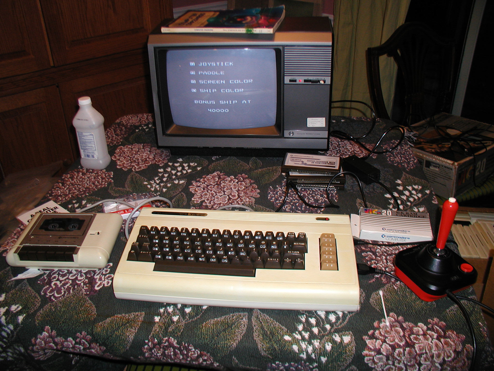

Bienvenue sur mon espace personnel
Parcours Professionnel et académique.
Je me présente, Francis Boisvert, étudiant a l'AEC développement de logiciels du college de Maisonneuve.Passionné d'informatique depuis l'enfance, je poursuis aujourd'hui une transition professionnelle vers le domaine du développement logiciel après près de vingt ans d'expérience en électromécanique.
Les premières années.

Mon premier PC fut un 486-DX 33 que j'ai assemblé à partir de pièces de vieux systèmes que mon père ramenait du travail dans le milieu des années 90. Je me souviens avoir du redresser les pins du processeur, car elles avaient été pliées lors du transport.
Parcours Académique.
J'ai obtenu un DEP en élctromécanique de systèmes automatisés en 2007. Après une carrière de près de 20 ans dans ce domaine, je suis de retour a temps plein aux études dans le domaine de l'informatique à l'AEC développement de logiciels du college de Maisonneuve.
Parcours Professionel.
Au début de ma carrière, j'ai occupé des emplois très variés, souvent physiques. J'ai notamment opéré une fraiseuse CNC pour l'aluminium, travaillé en soudure, en perçage, et j'ai conduit des chariots élévateurs. Ces expériences m'ont permis de développer une solide compréhension du travail de terrain et des procédés industriels. Au cours des 19 dernières années, j'ai travaillé comme électromécanicien. Dans ce domaine, j'ai développé une forte expertise en troubleshooting et en diagnostic technique, en analyse de pannes et en optimisation/modification d'équipements.
Compétences.
Au fil des années j'ai développé plusieurs compétences, en voici quelques unes:
- Diagnostic technique avancé (troubleshooting) sur systèmes mécaniques, électriques et automatisés.
- Analyse de pannes complexes et résolution méthodique de problèmes.
- Maintenance préventive et corrective d'équipements industriels.
- Lecture et interprétation de plans, schémas électriques et mécaniques.
- Programmation et opération de machines CNC.
- Techniques de soudure et de fabrication métallique.
- Opérations de perçage et d'usinage de précision.
- Conduite sécuritaire de chariots élévateurs.
- Utilisation d'outils de mesure et d'instruments de précision.
- Compréhension des procédés industriels et des environnements manufacturiers.
- Esprit d’analyse et pensée logique.
- Approche orientée solutions et amélioration continue.
- Impression 3D sur machine à filament et résine UV.
Objectifs Professionnel
Mon objectif est de contribuer à la conception, l'optimisation et la maintenance d'applications fiables et performantes, en combinant ma rigueur technique, ma capacité d'analyse et ma passion de longue date pour l'informatique. Je souhaite intégrer une équipe où je pourrai continuer d'apprendre, développer mes compétences en programmation et participer activement à la création de solutions technologiques concrètes et efficaces.
*La vie, c'est comme une bicyclette, il faut avancer pour ne pas perdre l'équilibre*
-Albert Einstein